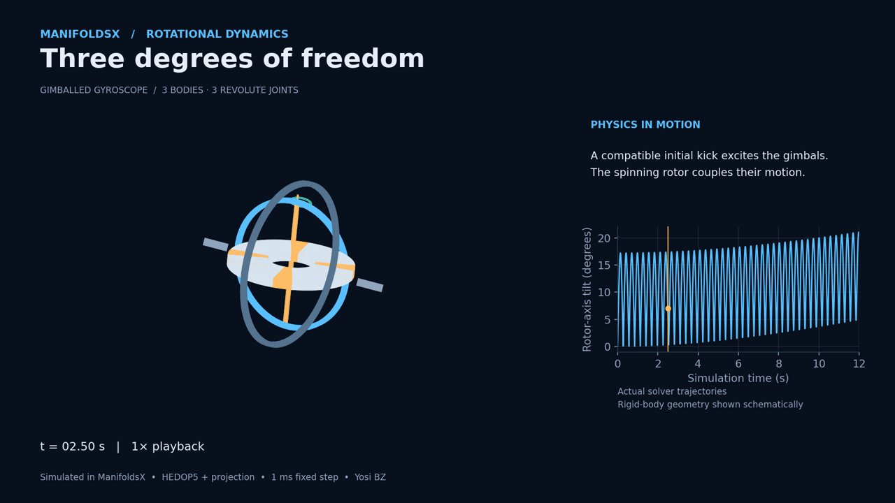

Three studies in rotational dynamics
A spinning rotor couples two gimbals. A top precesses under gravity. A free body flips without an applied torque. We check all three in ManifoldsX.

The models, calculations and numerical checks behind the animations.
A spinning rotor couples two gimbals. A top precesses under gravity. A free body flips without an applied torque. We check all three in ManifoldsX.

Platform-position errors and run times for a driven two-stage mechanism, checked against a separate forward-kinematics calculation.
Read the benchmarkModel description, solver settings, numerical comparisons and a reproduction package.
Suggestions for analytical checks and challenging mechanisms are welcome.
manifoldsx.eng@gmail.com